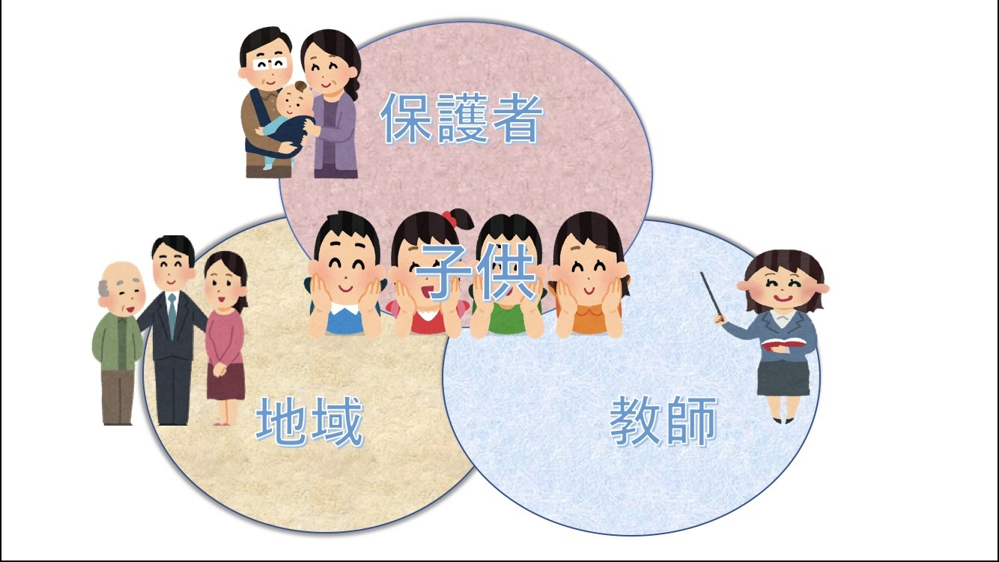

教サポとは？
「教育×αで最高のeducationを」 を理念に、子供たちの教育に関する悩みに対して、学生が 子供の視点 で問題解決を
目指し活動しています。
子供たちの「悩み」って？
私たちは、(保育園)、幼稚園、小学校、中学校、高等学校、大学と教育を経験してきました。その中で、教育に対しての悩みはありませんでしたか？
例えば、「計算方法が分かりにくい」や「コンパスがすぐにずれてしまう」等といった教科教育に対する悩みや「体重が増えない」、「いじめが終わらない」等といった生活教育に対しての悩みがあります。
どうやって解決するの？
計算方法の工夫のために教材研究をしたり、学部間の垣根を超えた領域の融合による新たな解決等といった活動を通して、これからの教育を担う教育学生や教育に関わる看護学部や法学部、工学部等の学生が子供の視点で問題解決を目指します。